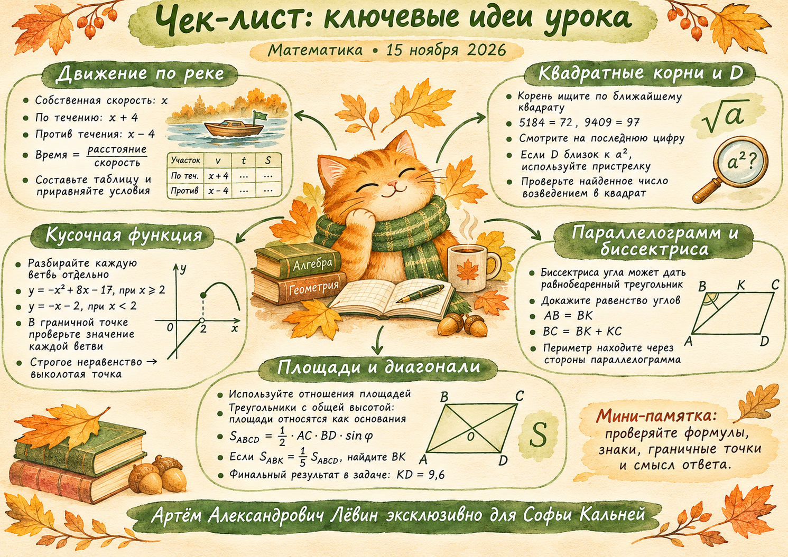

ОГЭ · 15 ноября 2026
Графики, уравнения и геометрия
Пять учебных сюжетов: движение по воде, большие квадратные корни, кусочные функции, биссектриса параллелограмма и площади через диагонали. Основная задача — связывать формулы с их областью применения.

01 · Текстовая задача
Движение по реке
Пусть v — собственная скорость судна, u — скорость течения, s — расстояние. Время равно расстоянию, делённому на скорость.
| Путь | Скорость | Время |
|---|---|---|
| По течению | v + u | s/(v + u) |
| Против течения | v − u | s/(v − u) |
Область допустимых значений: v > u ≥ 0.
Пример с занятия
Судно проходит 192 км в каждом направлении; течение 4 км/ч, против течения путь дольше на 4 часа.
После приведения к общему знаменателю: 1536/(v² − 16) = 4, откуда v² = 400. С учётом v > 4 находим 20 км/ч.
Проверка: 192/16 − 192/24 = 12 − 8 = 4 часа.
02 · Числа и уравнения
Как извлекать большие квадратные корни
Сначала найдите ближайшие полные квадраты, затем возможные последние цифры корня. Обязательно проверьте результат.
Варианты поиска: прикидка и последняя цифра, разложение на множители, подбор близкого квадрата.
Большой дискриминант
Для 60x² − 1802x + 60 = 0:
Проверяем 1798: 1802² − 1798² = (1802 − 1798)(1802 + 1798) = 14 400. Значит, √D = 1798.
Ответ: 30 и 1/30.
03 · Функции и графики
Кусочная функция: граничные точки
Исследуем две ветви по отдельности. При x ≥ 2 используем параболу, при x < 2 — прямую.
f(x) = −x − 2 при x < 2.
Парабола имеет вершину (4; −1). При x = 2 она даёт −5 — точка закрашена. Прямая в x = 2 дала бы −4, но эта точка выколота.
Не соединяйте ветви искусственно: на границе допускается разрыв.
03.1 · Число решений
Когда у f(x) = m ровно два решения?
Горизонтальная прямая y = m пересекает график в допустимых точках. Прямая-ветвь даёт значения y > −4. На параболе максимальное значение равно −1, а точка x = 2 соответствует y = −5.
| Уровень m | Число точек |
|---|---|
| m < −5 | 1 |
| −5 ≤ m ≤ −4 | 2 |
| −4 < m < −1 | 3 |
| m = −1 | 2 |
| m > −1 | 1 |
04 · Геометрия
Биссектриса угла параллелограмма
В параллелограмме ABCD биссектриса угла A пересекает сторону BC в точке K. Так как AD ∥ BC, получаем равенство накрест лежащих углов.
Значит, AB = BK.
При BK = 12 и KC = 16 имеем AB = 12, BC = 28 и P = 2(12 + 28) = 80.
В доказательстве важно
- Назвать параллельные стороны AD и BC.
- Указать угол, равный одному из углов биссектрисы.
- Доказать равнобедренность треугольника ABK.
- Найти стороны параллелограмма и периметр.
05 · Площади
Треугольники с общей высотой
Для треугольников ABK и ABD с основаниями BK и BD на одной прямой высота из A общая.
Пример: BK = 7, BD = 20, S(ABD) = 60, следовательно, S(ABK) = 60 · 7/20 = 21.
05.1 · Комбинированная задача
Площади четырёхугольника через диагонали
Для выпуклого ABCD с пересекающимися диагоналями AC и BD и углом φ между ними:
При AO = 12, OC = 16 и BD = 18 получаем AC = 28 и S(ABCD) = 252 sin φ.
В треугольнике ABD: S(ABD) = ½ · AO · BD · sin φ = 108 sin φ.
Найдём KD
Точка K лежит на BD; S(ABK) = ⅕ S(ABCD).
- Из условия S(ABK) = 50,4 sin φ.
- По общей высоте S(ABK) = (BK/18) · 108 sin φ = 6BK sin φ.
- Так как sin φ > 0, получаем BK = 8,4.
- KD = 18 − 8,4 = 9,6.
Проверка смысла: точки O, B и K лежат на одной прямой BD, поэтому S(OBK) = 0. В содержательной задаче используется S(ABK).
06 · Самостоятельная работа
10 задач на закрепление
Решите на бумаге, раскройте ответ и отметьте готовые задания. Условия соответствуют печатному чек-листу.

Осенний постер
Наглядная памятка с котом и главными идеями урока. За точными формулами обращайтесь к тексту занятия и PDF.
Открыть в полном размере